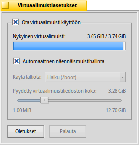

Virtuaalimuistiasetukset
Virtuaalimuistiasetukset
| Työpöytäpalkki: | ||
| Sijainti: | /boot/system/preferences/VirtualMemory | |
| Asetukset: | ~/config/settings/kernel/drivers/virtual_memory ~/config/settings/VM_data - Tallentaa paneelin ikkunan sijainnin. |
Virtuaalimuisti sallii käyttää levyn näennäismuistia, jos RAM-muistia voidaan käyttää herkemmin muihin asioihin. Jopa silloin kun RAM-muistia on runsaasti, virtuaalimuistin tarjoaminen ei ole koskaan huono ajatus.
Normaalisti näennäistiedosto kirjoitetaan alkulatausosiollesi. Jos muisti loppuu tässä, voit ottaa pois käytöstä ja valita toisen liitetyn osion Käytä taltiota-ponnahdusvalikosta. Näennäistiedoston koko asetetaan alapuolella liukukytkimellä.
Jos usein törmäät levyn roskaantumiseen siksi, että virtuaalimuistijärjestelmä lisää ja poistaa muistia, voit kokeilla näennäismuistille erillistä kiintolevyä, jolloin näennäistiedosto välttää siirtoruuhkan. Saman kiintolevyn toinen osio järjestelmällesi tai tiedoillesi ei yksinkertaisesti auta. RAM-muistin kasvattaminen olisi tietysti tehokkain tapa...l
| nollaa kaikki oletusarvoihin. | ||
| palauttaa takaisin asetukset, jotka olivat voimassa kun Virtuaalimuistiasetukset-sovellus käynnistettiin. |